Здоровые зубы
Понятные материалы о профилактике, лечении и ежедневном уходе. Отвечаем на частые вопросы пациентов без сложных терминов.
Читать материал недели
Что такое санация полости рта
Что входит в санацию, когда она необходима и почему лечение начинают с полной диагностики.
Читать материалОбильное слюноотделение: возможные причины и что делать
Почему слюны может стать больше, когда это временно и в каких случаях требуется консультация.
Читать материалКак избавиться от зубного налёта
Почему появляется налёт, что действительно помогает дома и когда нужна профессиональная гигиена.
Читать материалПродукты для здоровья зубов и дёсен
Как питание влияет на полость рта и какие продукты стоит чаще включать в рацион.
Читать материалДомашняя зубная паста: польза или риск для эмали
Почему сода, уголь, соль и лимонный сок не заменяют проверенную зубную пасту.
Читать материалКариес: причины, признаки и методы лечения
Как развивается кариес, почему он не всегда болит и от чего зависит объём лечения.
Читать материалПародонтит: симптомы, лечение и профилактика
Как начинается воспаление тканей вокруг зуба и почему кровоточивость дёсен нельзя считать нормой.
Читать материалЧувствительность зубов: причины и способы уменьшить дискомфорт
Почему зубы реагируют на холодное, горячее и сладкое и когда специальной пасты недостаточно.
Читать материалМетоды отбеливания зубов: преимущества и ограничения
Чем профессиональное отбеливание отличается от домашних систем и почему сначала нужен осмотр.
Читать материал9 рекомендаций, которые помогают сохранить зубы здоровыми
Практичный ежедневный план: чистка, межзубные промежутки, питание и профилактические осмотры.
Читать материалПанорамный рентген
Для его получения в цифровом виде в ротовую полость помещается специальный датчик, на снимке будет видно до трех зубов, что и позволит лечащему стоматологу рассмотреть их состояние. С…
Читать материалРадиовизиография зубов в Москве
Сегодня перед лечением зубов без рентгенографического обследования обойтись невозможно, так как любое стоматологическое, а особенно эндодонтическое и хирургическое, вмешательство должно…
Читать материалСделать панорамный снимок зубов в Москве (Ортопанограмма)
Перед проведением большинства стоматологических процедур, особенно связанных с хирургическим вмешательством, врач обычно направляет пациента на ортопаномограмму — панорамный снимок…
Читать материал
Имплантанты
Стоимость устанавливаемых протезов напрямую зависит от используемых материалов, их качества и составляющих. Есть импланты очень дорогие, есть более доступные. Приведем несколько примеров.
Читать материал
Имплантация зубов: виды и цены
Имплантация – это процедура, с помощью которой восстанавливается функциональность полностью утраченных зубов. После ее благополучного выполнения, пациент в состоянии без дискомфорта и…
Читать материал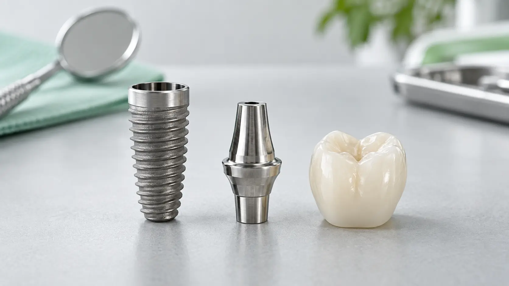
Коронки на импланты
Металлокерамические коронки на имплантах - одна из наиболее востребованных методик в современной стоматологии, с помощью которой возможно как протезировать один зуб, так и, несколько,…
Читать материал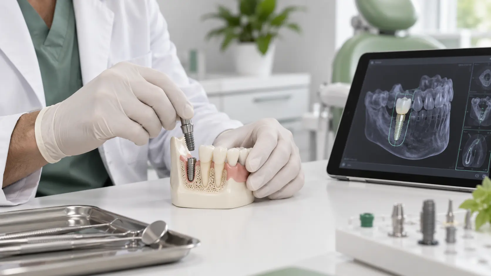
Процесс установки импланта
Первым шагом для успешной имплантации является полное обследование, по результатам которого врач составляет план дальнейшего лечения.
Читать материал
Рекомендации при имплантации зубов
Имплантация зубов – это сложная стоматологическая процедура, которая предусматривает подготовительный и послеоперационный период.
Читать материал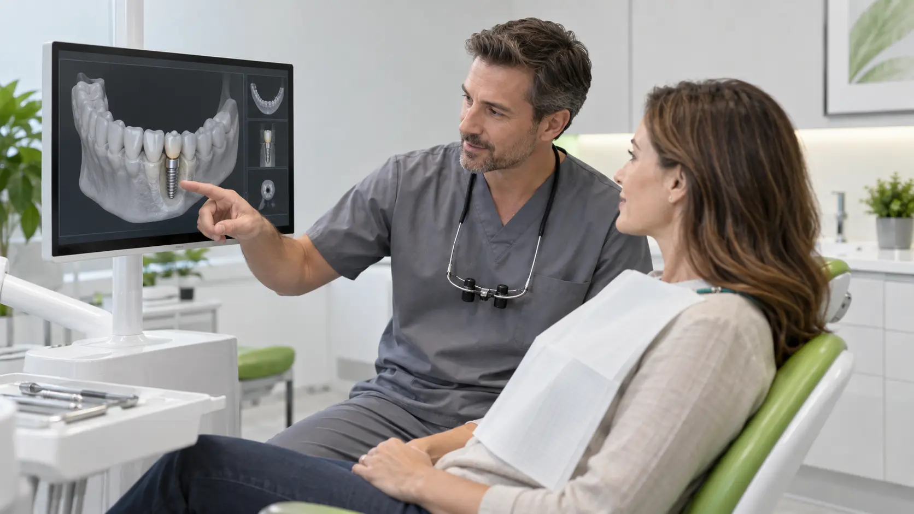
Установка зубных имплантов
Потерять зуб - это всегда неприятно. Помимо эстетических проблем, такое происшествие влечет за собой и стоматологические сложности. Если в составе челюсти отсутствует зуб, то соседние с…
Читать материал
Установка коронки на имплант в Москве
Коронки на имплантах — одна из самых востребованных услуг в современной стоматологии. С ее помощью можно протезировать как один зуб, так и несколько с помощью мостовидные конструкций с…
Читать материалЭкспресс имплантация зубов в Москве
Экспресс имплантация зубов – это способ восстановления зуба, при котором установка импланта производится всего за одно посещение врача. Имплантация возможна сразу же после удаления зубов.
Читать материалБезопасное отбеливание зубов
Процедура отбеливания зубов носит исключительно эстетический характер. Не существует медицинских показаний к ее проведению. Люди хотят иметь красивую улыбку. Специалисты уверены, что…
Читать материалВосстановление эмали зубов
Эмаль – наружная ткань зуба, защищающая его от воздействия негативных факторов. Нарушение эмалевого покрытия приводит к появлению кариеса и других заболеваний зубов, а процедура…
Читать материалКариес корня зуба: лечение
С лечением кариеса корня зуба не стоит затягивать, иначе зуб можно потерять. Поэтому ждём Вас в наших стоматологических клиниках Стомко. Процедура абсолютно безболезненная.
Читать материалЛечение зубов без боли в Москве
У большинства людей поход к стоматологу ассоциируется с негативными эмоциями. Это связано с неприятными ощущениями, которые возникают при проведении манипуляций. Поэтому лечение зубов…
Читать материалЛечение зубов в рассрочку в Москве
Современная стоматология идет в ногу со временем, внедряя в практику новейшие разработки и методы терапии. Поэтому большинство клиник проводят лечебные и профилактические процедуры с…
Читать материалЛечение кариеса передних зубов
Вылечим кариес на передних зубах. Пора обратиться к стоматологу!
Читать материалЛечение кариеса — профилактика и диагностика
Что такое кариес? С латыни слово переводится как гниение. Кариес – это поражение твердых тканей, которое начинается с разрушения эмали. Сначала появляется небольшое повреждение, которое…
Читать материалЛечение пульпита в Москве
Пульпит (воспаление пульпы) характеризуется воспалением зубного нерва. Человек ощущает острую боль, в некоторых случаях наблюдается отечность десны. Болевая симптоматика носит постоянный…
Читать материалНаращивание зубов
Механические дефекты, пятна, трещины, сколы, щели, кариес – все эти факторы негативно влияют на зубы. Они становятся некрасивыми, страдают наши улыбки, а зоны повреждений «открывают…
Читать материалОтбеливание зубов Air flow
Игнорирование элементарных правил гигиены полости рта может привести к серьезным последствиям. В труднодоступных для чистки местах в первую очередь формируется налет, который в…
Читать материалОтбеливание зубов в Москве в стоматологии
Красивые белые зубы – это признак внешней привлекательности, уверенности и успеха. Но возрастные изменения, а также вещества, содержащиеся во многих продуктах питания, некоторые…
Читать материалОтбеливание зубов: виды и цены
Отбеливание зубов представляет собой процесс, при котором с помощью стоматологического оборудования и химических составов (перекись водорода) осуществляется отбеливание зубной эмали.…
Читать материалПломбирование зубов в Москве
Пломбирование – это возможность восстановить форму и функцию поврежденного кариесом зуба. Процедура достаточно популярна в стоматологии. При выполнении специалистом процедуры, он…
Читать материалПломбирование каналов зубов
Зуб человека состоит из двух частей: коронки и корня. В самой середине располагается пульпа – сосудисто-нервный пучок, который по канальным протокам направлен к десне. При появлении в…
Читать материалПрофессиональная гигиеническая чистка зубов в Москве
Визит к зубному врачу для многих людей доставляет много психологических проблем, так как пациент подсознательно ожидает боли и неприятных ощущений. Но современная стоматология — это уже…
Читать материалРеставрация зубов
Более подробную информацию о нашей услуге - реставрации зубов Вы получите у наших менеджеров, либо на приёме у врача.
Читать материалСнятие зубного камня ультразвуком в Москве
Для здоровья всего организма чрезвычайно важно соблюдать правила личной гигиены ротовой полости. Образовавшийся на зубах налет способствует активному росту колоний различных…
Читать материалУдаление зубного камня в Москве
Затвердевший или начавший твердеть налет на зубах, состоящий из бактерий, называется камнем. Он образуется из-за размножающихся микроорганизмов. Особенно интенсивно это происходит после…
Читать материалУдаление зубного камня ультразвуком
Цены на удаление зубного камня ультразвуковой чисткой в клиниках:
Читать материалУстановка виниров в Москве
Открытая доброжелательная улыбка помогает расположить к себе собеседника, поднимает окружающим настроение, она часто является показателем успешности ее обладателя. Можно заметить явную…
Читать материалУстановка композитных виниров в Москве
Виниры – это тонкие накладки на передние зубы, которые предназначены для исправления внешнего вида зубов. Чаще используются для изменения цвета поверхности или формы зубов, способны…
Читать материалХудожественная реставрация передних зубов
Художественная реставрация передних зубов — это восстановление естественной формы зубов при наличии дефектов. Делается это при помощи искусственных материалов.
Читать материалЭстетическая художественная реставрация зубов
Художественная реставрация зубов — это восстановление естественной формы зубов при помощи искусственных материалов. Данная процедура разделяется на прямую и непрямую. Прямое…
Читать материал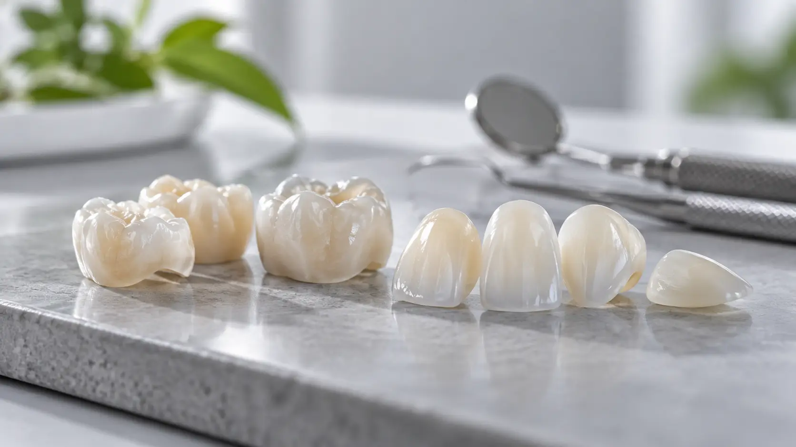
Безметалловые керамические коронки
Современная керамика на безметалловой основе обеспечивают высокую экономичность и эффективность работы. В нашей клинике мы используем инновационную систему IPS e.max, которую отличает…
Читать материал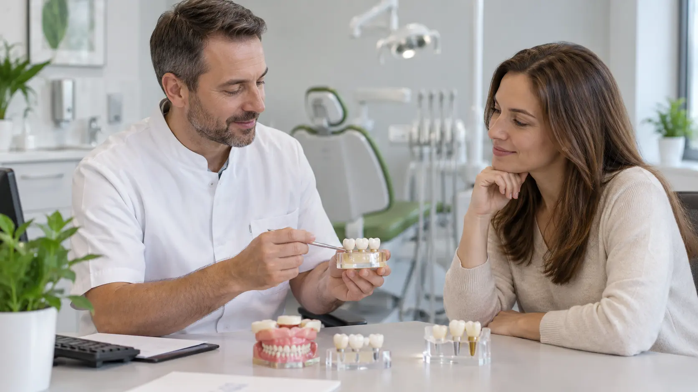
Полезная информация
Технологический прогресс оказал невероятное влияние на все сферы жизни. Благодаря новым методикам и оборудованию медицинские технологии позволяют эффективно справляться со множеством…
Читать материал
Полное протезирование зубов имплантами
Выше Вы можете видеть наши цены на полное протезирование зубов имплантами, все подробности мы расскажем по телефону.
Читать материал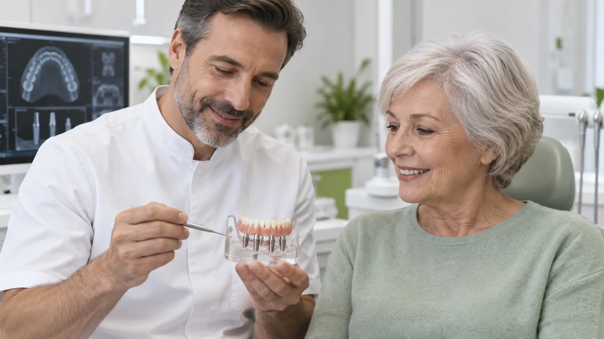
Полное протезирование зубов на имплантах в Москве
Ошибочно принято считать, что проблема протезирования зубов актуальна только для людей пожилого возраста. На самом деле это не так. Средний возраст пациентов, которым требуется…
Читать материал
Полное протезирование зубов: виды и цены
Полное протезирование реализуется с помощью съемных или несъемных протезов.
Читать материал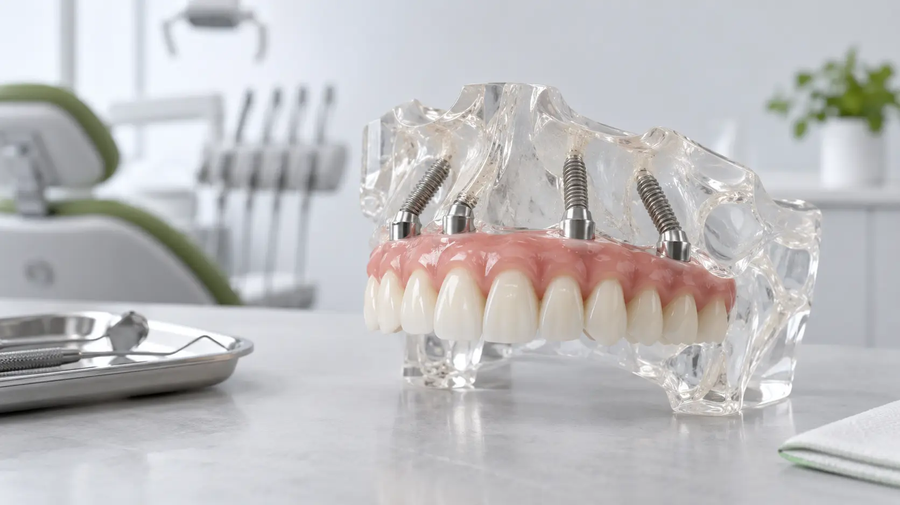
Протезирование верхней челюсти при отсутствии зубов
Красота улыбки является важным моментом в жизни каждого человека. Если зубы выглядят здоровыми и привлекательными, то человек обретает должную уверенность в своих силах. При отсутствии…
Читать материал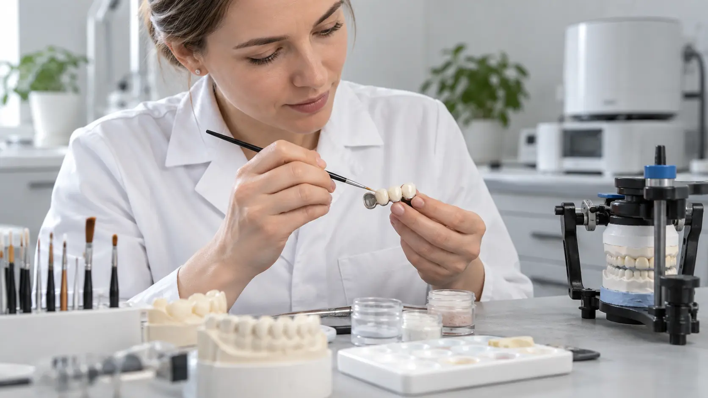
Протезирование зубов металлокерамикой
Основой металлокерамического протеза является металл толщиной около полумиллиметра, покрытый керамическим напылением. В качестве материала для основы чаще всего используется сплав хрома…
Читать материал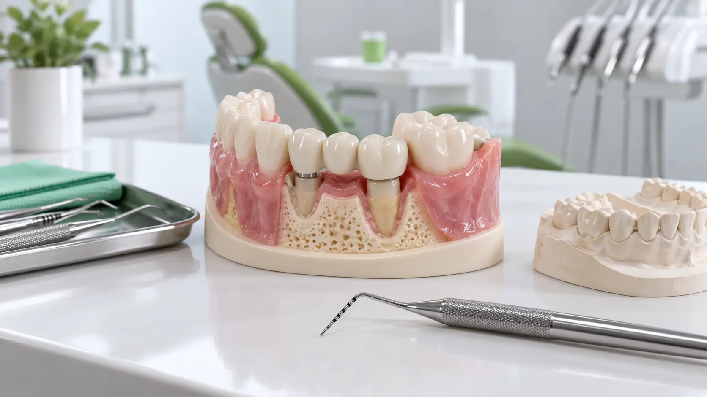
Протезирование зубов при пародонтите десен
Гигиена и профилактика
Читать материал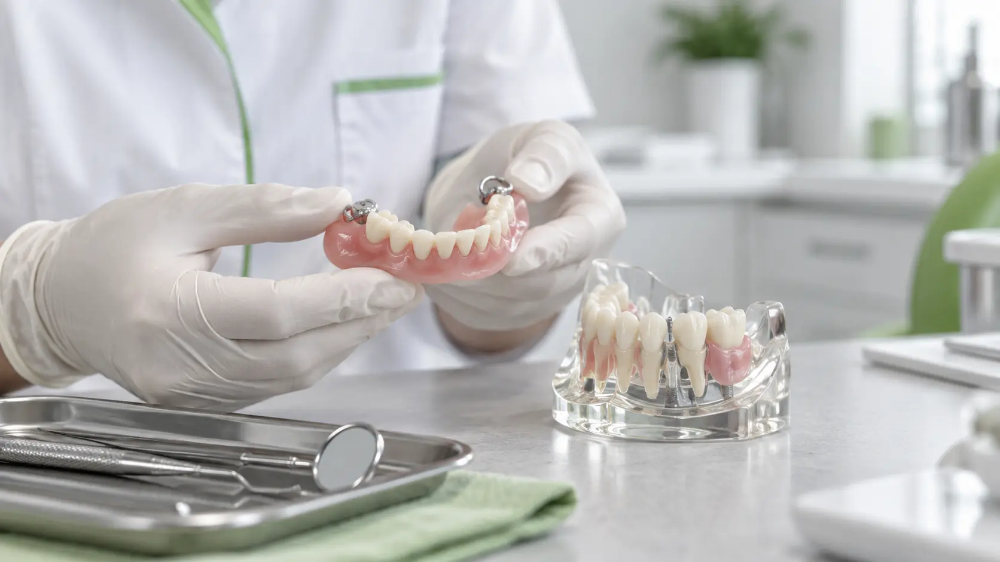
Протезирование зубов при пародонтозе
Средняя и тяжелая степень пародонтоза характеризуется практически полным отсутствием костной ткани. Повышается подвижность, оголяются шейки, зубы выглядят длиннее. Из-за отсутствия…
Читать материал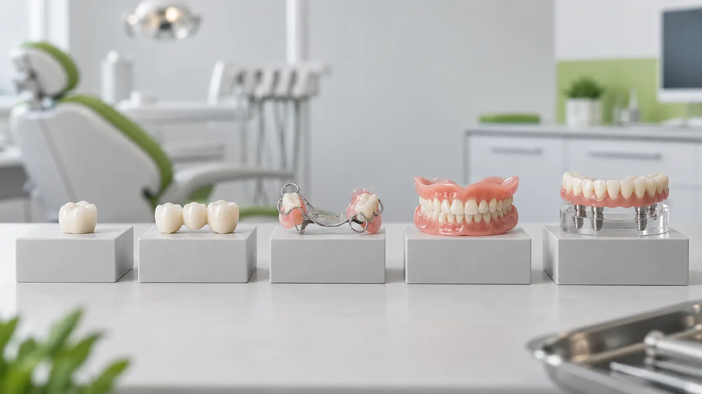
Протезирование зубов: виды зубных протезов и цены
При протезировании осуществляется восстановление или замена разрушенных зубов.
Читать материал
Съемные зубные протезы
Современные съемные зубные протезы обладают хорошими эстетическими качествами, и неприхотливы в уходе. Предоставлен огромный выбор протезов разнообразных конструкций, из различных…
Читать материал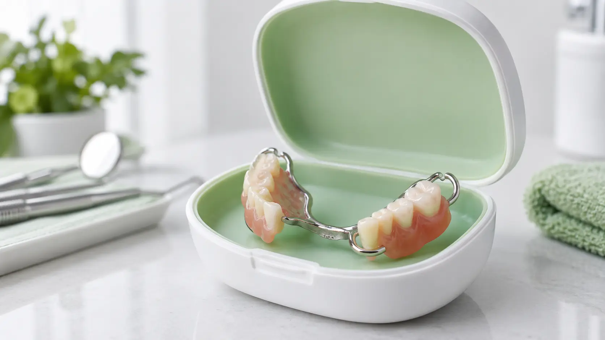
Съемные протезы
Съемные протезы применяются в тех случаях, когда невозможно поставить импланты или мостовидные протезы. Они требуют большего привыкания, но когда невозможны другие методы протезирования,…
Читать материал
Установка зубных протезов нового поколения (без неба)
Красивая улыбка — визитная карточка современного и успешного человека. Наша клиника предоставляет уникальный спектр стоматологических услуг, в частности производство и установка зубных…
Читать материал
Установка металлокерамических коронок
Более подробно о ценах на коронки и их различия Вам расскажет доктор на бесплатной консультации.
Читать материал
Частичные протезы
Узнать что такое настоящее неудобство можно даже в отсутствие одного зуба, каково же тогда страдающим адентией, отсутствием таковых в принципе? Конечно, иногда адентия врожденная, но…
Читать материалСложное удаление зуба мудрости
Зубы мудрости доставляют немало проблем многим взрослым пациентам. Прорезываться такие зубы начинают обычно не раньше 18-летнего возраста, но этот процесс может начаться даже в 40 лет.…
Читать материалУдаление дистопированного зуба
Среди наиболее распространенных проблем с зубами мудрости можно назвать дистопию и ретенцию. При данных патологиях показано удаление проблемных «восьмерок», так как они становятся…
Читать материалУдаление зуба в Москве
Удаление зуба — хирургическая операция, при которой из челюсти удаляют зуб или корень зуба. Эту операцию проводят, если вылечить зуб невозможно, а дальнейшее нахождение зуба в полости…
Читать материалУдаление зуба мудрости на верхней челюсти
Многие пациенты стоматологов, услышав о планируемом удалении одного из зубов мудрости, начинают испытывать чувство панического страха. Но поводов для паники в реальности не существует.…
Читать материалУдаление зуба мудрости: особенности и цены по Москве
Цены на удаление зуба мудрости Вы найдете внизу страницы. Ждем вашего звонка!
Читать материалУдаление зуба с кистой на корне
Киста является доброкачественным новообразованием, которое может появиться практически в любой части организма, в том числе и у зубов. Она образуется около верхней части зуба как…
Читать материалУдаление зубов мудрости под общим наркозом
Нередко пациент слышит от стоматолога заключение о том, что необходимо удалить один или несколько зубов мудрости. Как правило, такие слова врача вызывают паническую реакцию и ожидание…
Читать материалУдаление кисты зуба в Москве
Киста около корня зуба представляет собой серьезную опасность, особенно если таких новообразований несколько. Она представляет собой «мешочек», наполненный жидкостью и располагается чаще…
Читать материалУдаление коренных зубов
В практике стоматологов одной из самых востребованных хирургических операций является удаление коренных зубов. Хотя современная стоматология и нацелена на то, чтобы сохранить как можно…
Читать материалУдаление корня зуба
Часто к стоматологам обращаются пациенты с сильно запущенными зубами, когда коронковая часть зуба практически полностью разрушена, а корни зуба гниют. В большинстве подобных случаев без…
Читать материалУдаление нерва из зуба
При острой зубной боли необходимо в обязательном порядке обращаться к стоматологу. Опытные специалисты стараются сохранить зубной нерв, но в некоторых случаях без его удаления не…
Читать материалУдаление нижнего зуба мудрости
Зубы мудрости нередко причиняют проблемы. Это связано с их поздним прорезыванием и сопутствующими осложнениями. Стоматологи часто рекомендуют удалять зубы мудрости, в том числе и на…
Читать материалУдаление ретинированного дистопированного зуба мудрости
Ретенция — это задержка в развитии, то есть ретинированный зуб является непрорезавшимся, находящемся в глубине десны. Если он дистопированный, то это означает неправильное расположение.…
Читать материалУдаление ретинированного зуба мудрости в Москве
Зубы мудрости обычно прорезаются достаточно поздно. Иногда они прорезываются в 15 лет, а в некоторых случаях — после 25-40 лет. При этом нередко они причиняют множество беспокойства:…
Читать материалУдаление ретинированного зуба мудрости на нижней челюсти
Зубы мудрости при прорезывании доставляют наиболее серьезные проблемы по сравнению с остальными зубами. Это связано с особенностями их прорезывания, а также сложным строением корней.…
Читать материалЦены на удаление зуба в Москве
Нет ничего страшного в удалении зубов, мы проведем процедуру абсолютно безболезненно. Цены на удаление можете найти внизу страницы.
Читать материалОстались вопросы?
Врач проведёт осмотр и подберёт рекомендации с учётом состояния ваших зубов и дёсен.